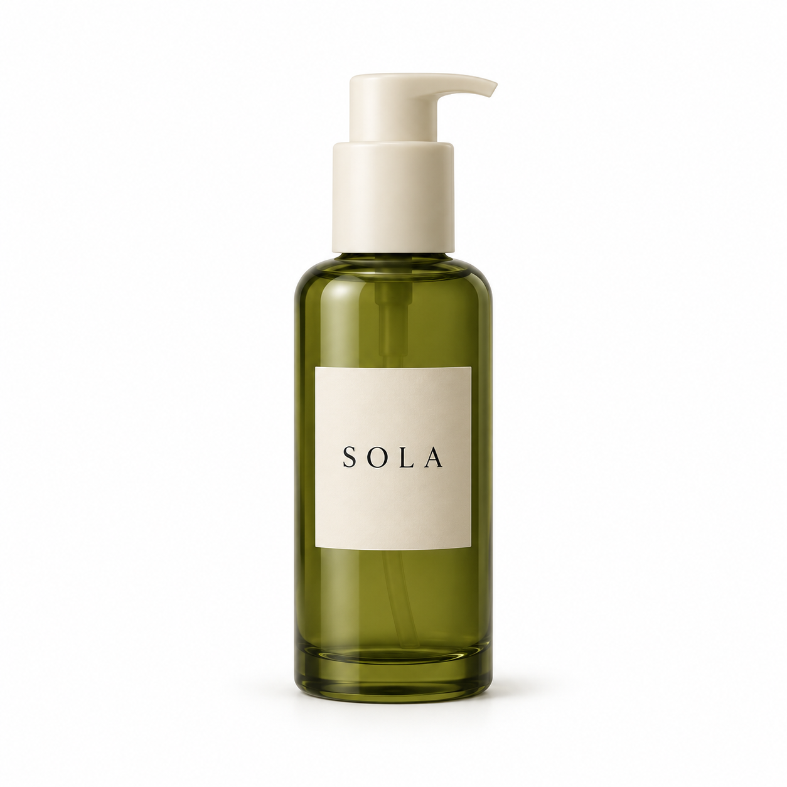
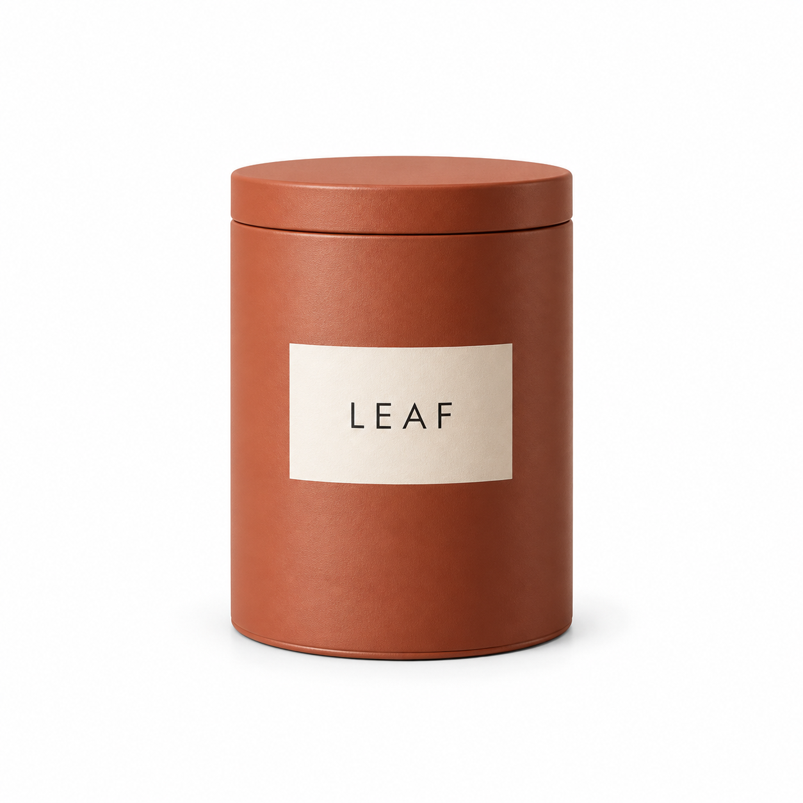
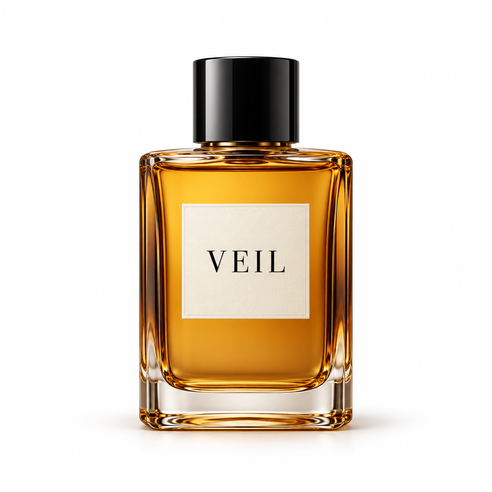
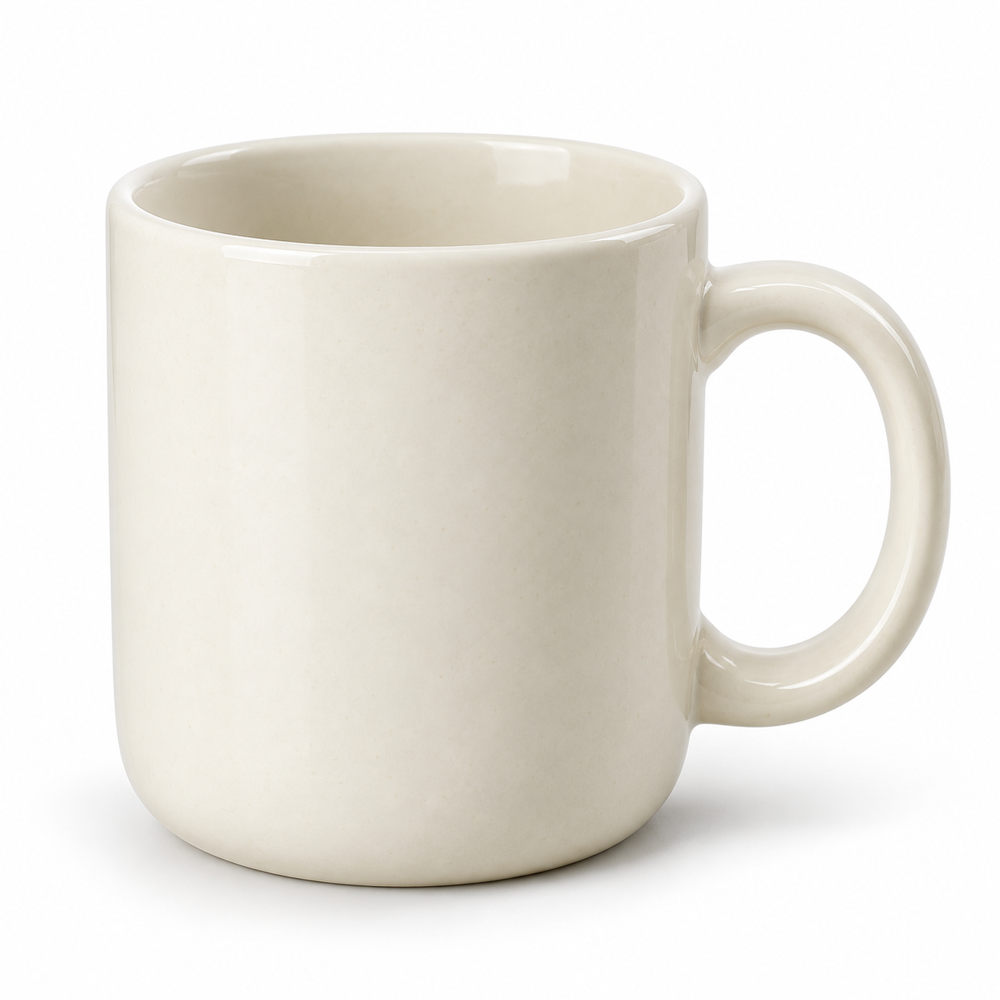
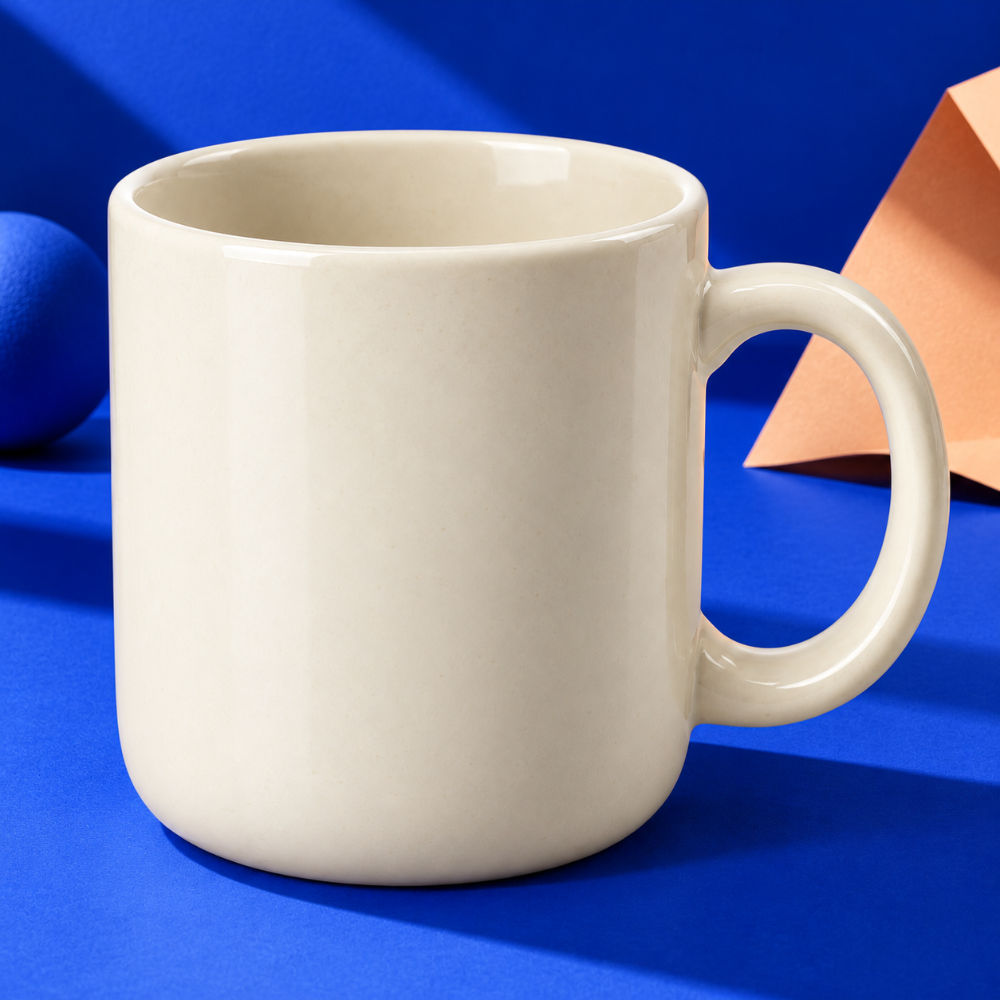
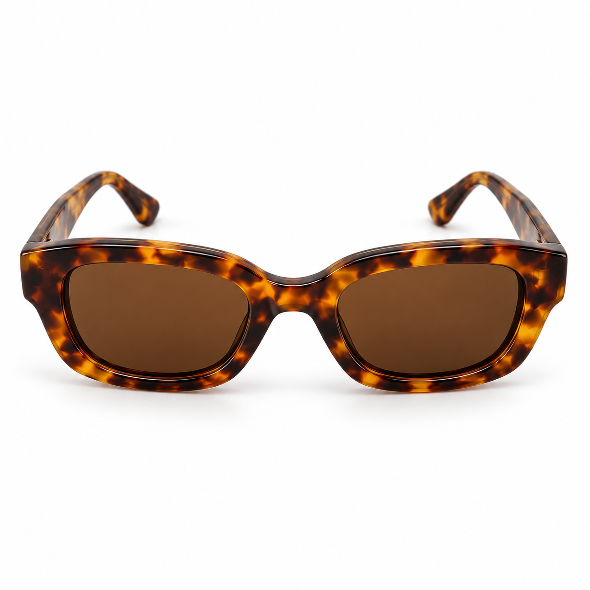
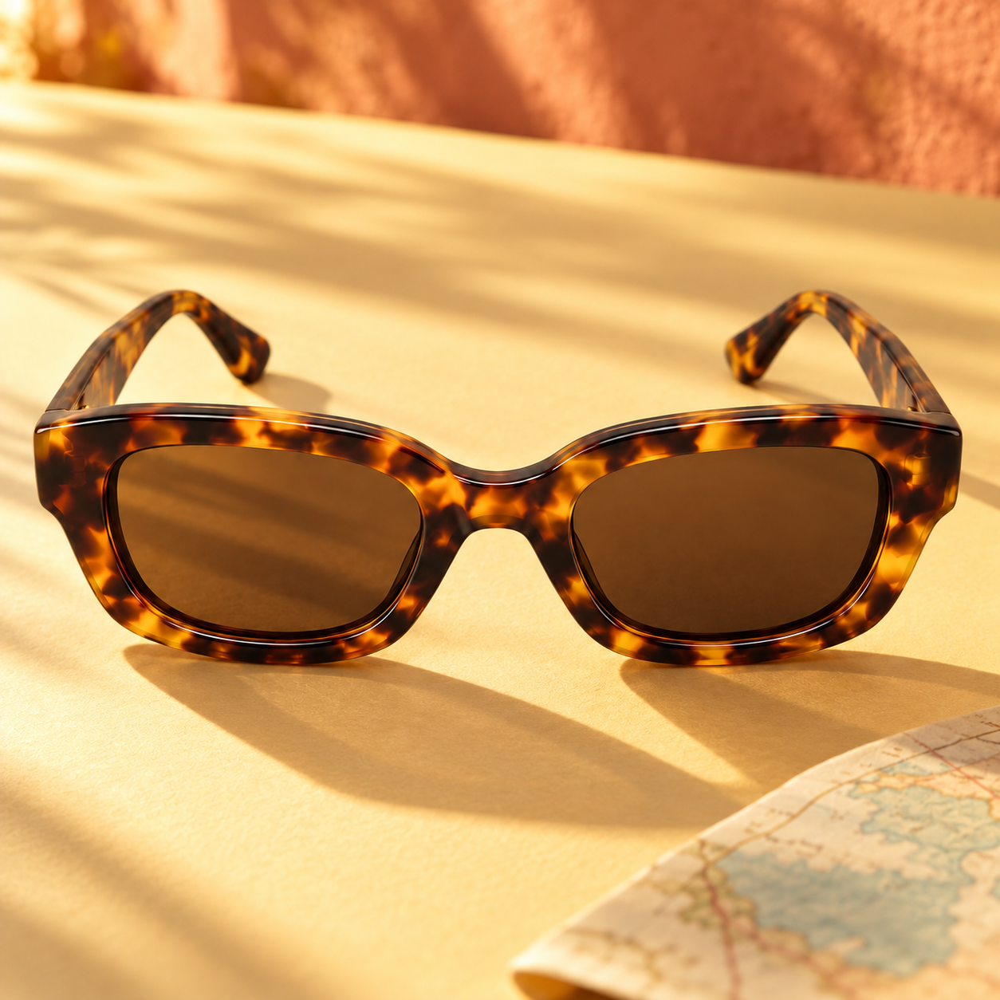
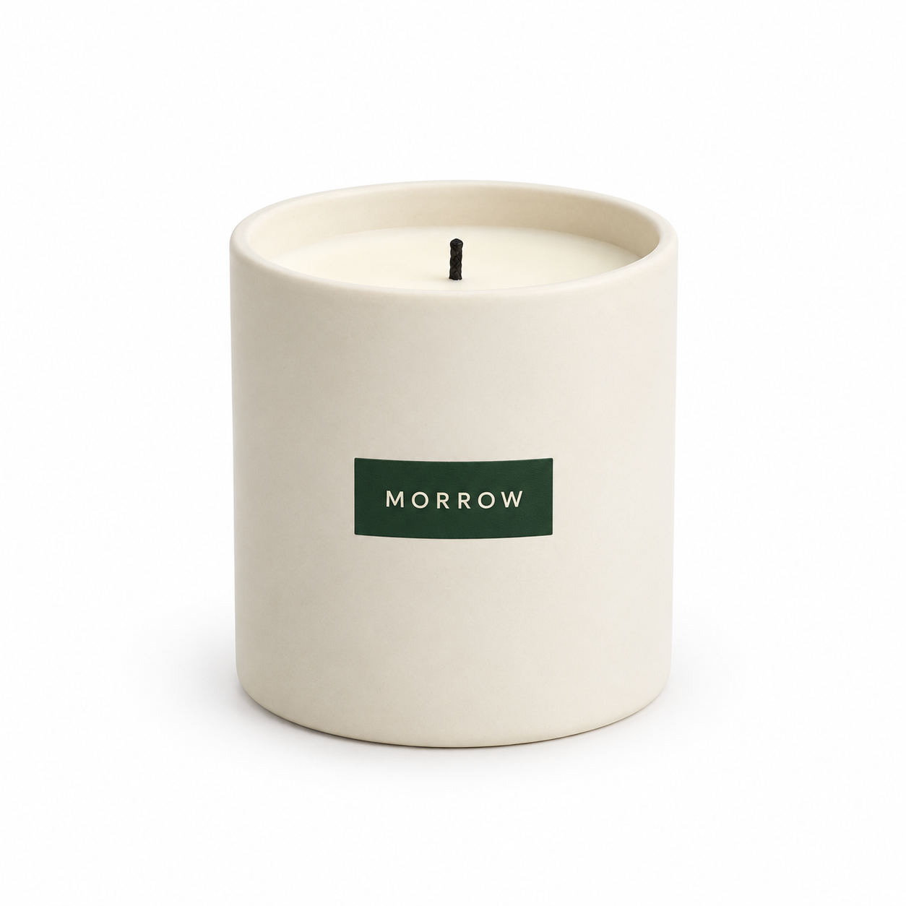
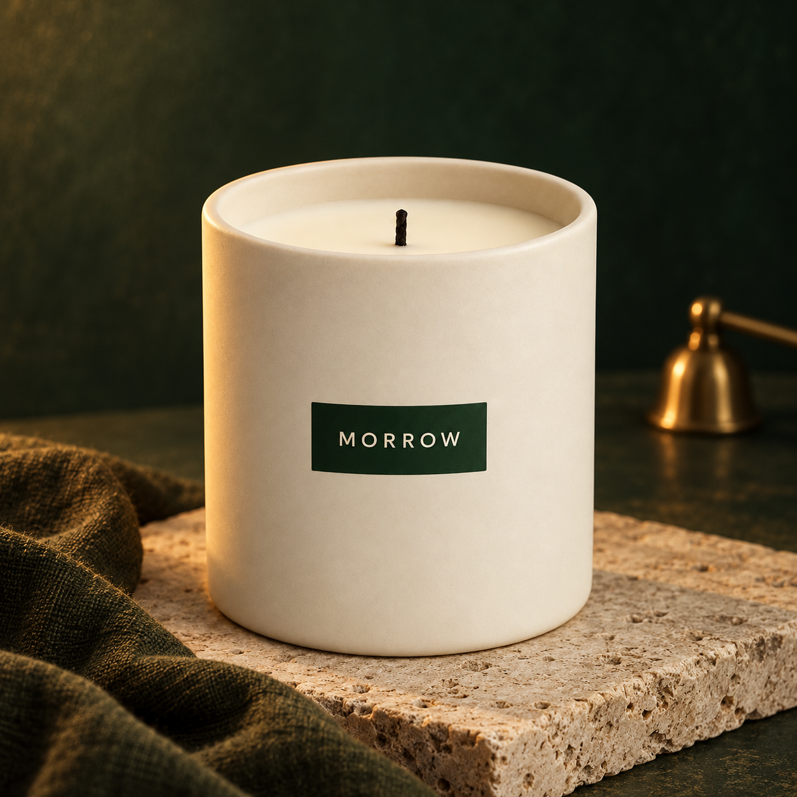

A little botanical calm.
Sage, soft daylight & fresh leaves
The bottle stays central. Fresh leaves, stone and soft shadows build a quiet daily ritual.
The portfolio
Explore six different product stories. Drag each slider toward “After” to reveal its styled setting—or use the buttons beneath it.
These are illustrative concepts for fictional products, not customer orders. For real work, we use your approved product photos and confirmed product details.
6 examples shown

Sage, soft daylight & fresh leaves
The bottle stays central. Fresh leaves, stone and soft shadows build a quiet daily ritual.


Citrus, terracotta & warm sunlight
Warm orange tones and citrus give a simple tea tin a bright, inviting shelf story.


Burgundy velvet & glossy reflections
Deep burgundy, folds of velvet and a reflection give the amber bottle a dramatic evening mood.


Cobalt shapes & sculptural contrast
A familiar cream mug meets graphic blue geometry: a playful idea for a homeware launch.


Butter yellow & a retro travel mood
Tortoiseshell frames, sunny yellow and travel cues turn an everyday accessory into a summer story.


Midnight green & cinematic limestone
Rich green, limestone and warm light create a calm night-time setting around an ivory candle.
Something good on your shelf?
Let’s make people pause.